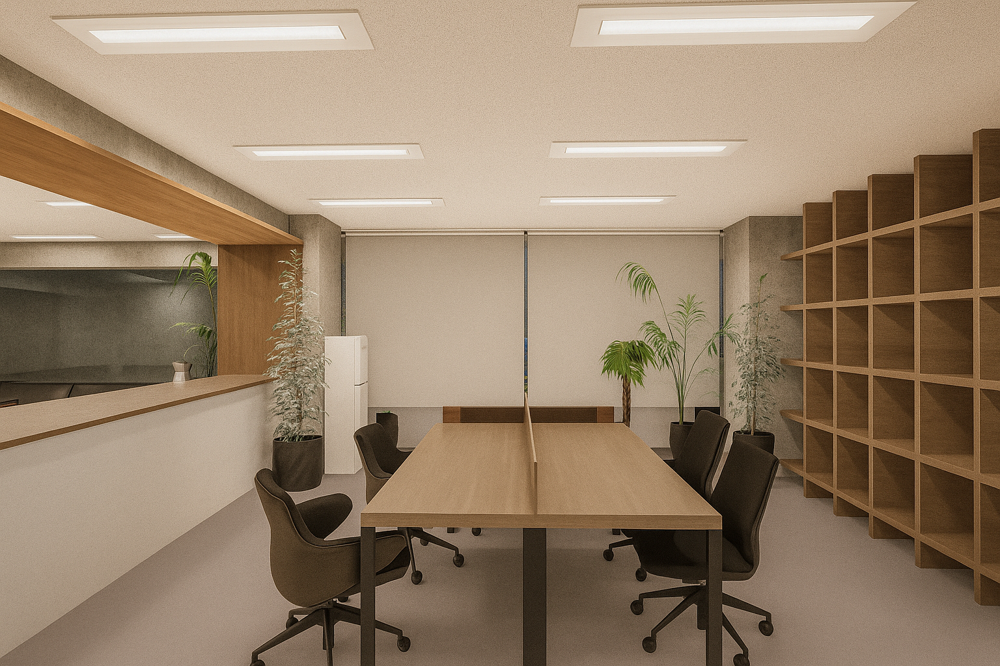
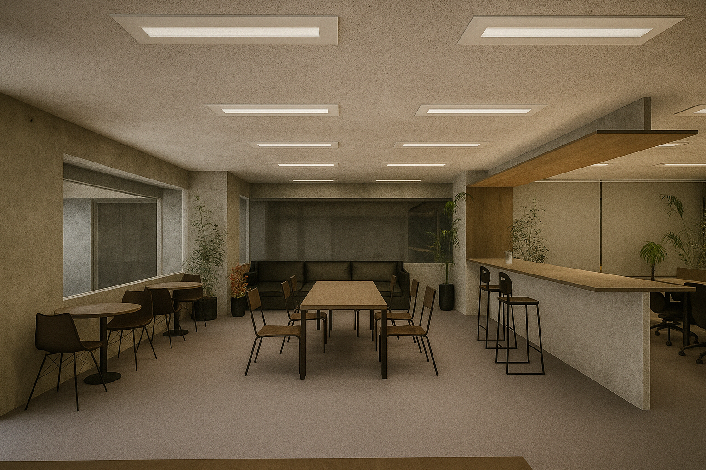
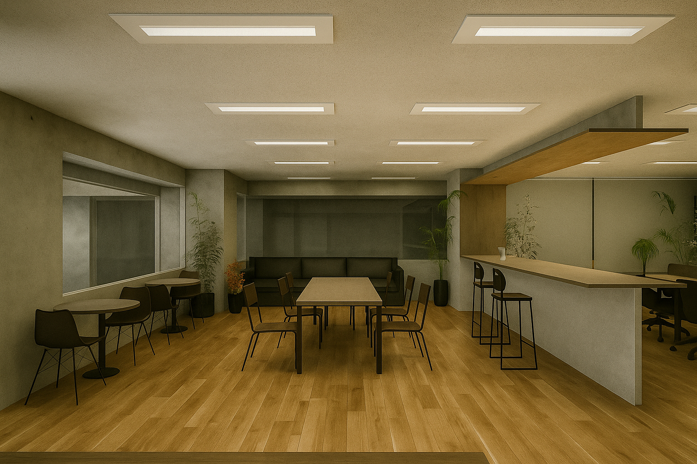
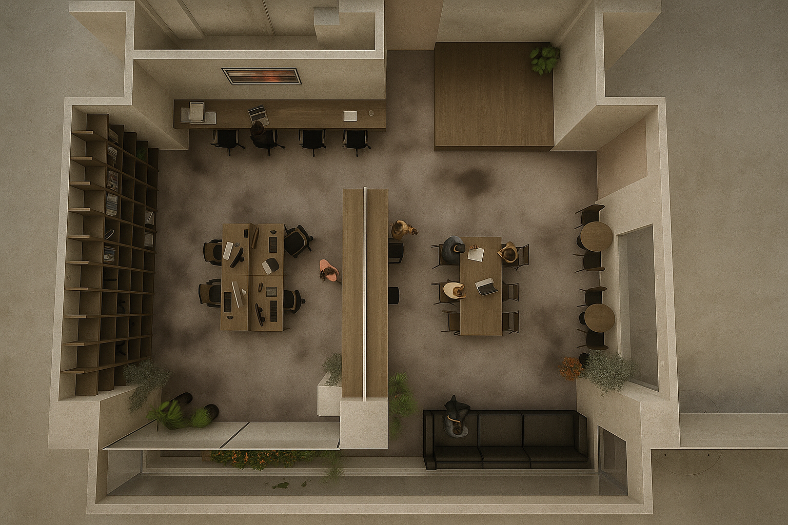

Nownever Office

CONCEPT
小さなチームのための「仕事と雑談が地続きになるオフィス」をテーマにした計画。 ただのデスクの並びではなく、打合せ・作業・ちょっとしたイベントが ゆるやかに混ざり合うよう、棚とテーブル、通路の取り方で空間を編み直している。
OUTLINE
・用途：クリエイティブオフィス
・規模：内装改修
・担当：ゾーニング / レイアウト / 家具配置 / 3D・パース制作 など
NOTE
既存の床や天井の条件を読み替えながら、限られたコストの中で どこまで「場のらしさ」を立ち上げられるかを意識した。 ワークスペースとライブラリー的な場を緩やかに繋ぐことで、 仕事のモードを切り替えやすいリズムをつくっている。 将来的な増床やレイアウト変更も見据え、可動性の高い家具構成とした。
PHOTOS



